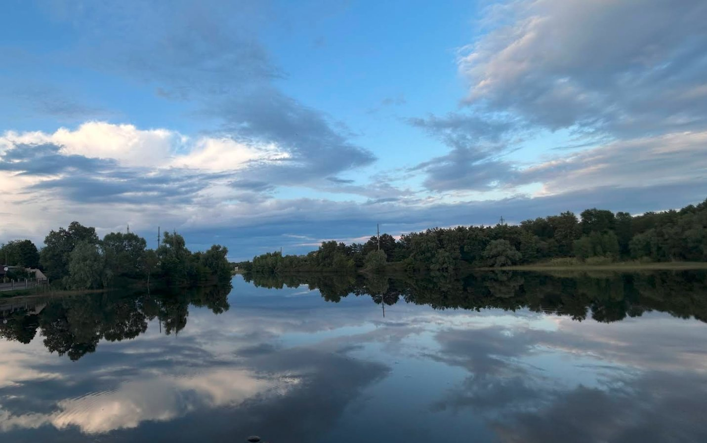
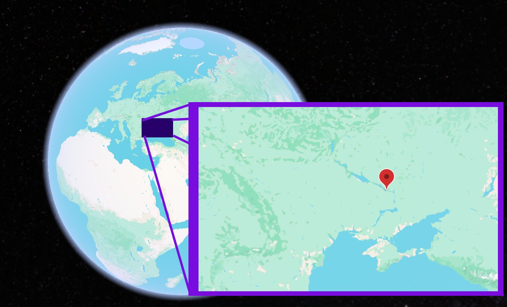

- : 0.129-0.0117
- :
- : Alluvial riverbed deposits of the Dnipro; no named formation
- : Riverbed. Bones and teeth of large Ice Age mammals were reworked and concentrated within the river's deposits.
- : Teeth and bones of mammoth and other Ice Age mammals
- : Glacial steppe (mammoth steppe) crossed by the Dnipro